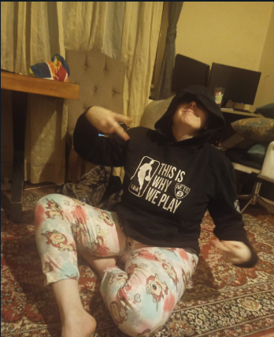

THANK YOU FOR VISITING the wiki of Wild Izuś's (Izabelicum ferus sp.) WEBSITE!
This website has been prepared with assistance from Associate Professor Izabela Bielawska. We would like to thank her for her work on Wild Izuś's (Izabelicum ferus sp.).

Rare photo of Associate Professor Izabela Bielawska